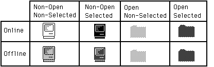
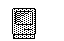

Introduction
Using resources of type ICON allows drawing of icons in srcOr mode.
Using resources of type ICN# allows for more variety when drawing icons.
There are two different kinds of resources that contain icons: ICON and ICN#. An ICON
is a 32 by 32 bit image of an icon and can be drawn using the following Toolbox Utilities calls:
MyIconHndl:= GetIcon(iconID);
PlotIcon(destRect,iconID);
|
While very convenient, this method only allows the drawing of icons in SrcOr
mode (as in the MiniFinder). The Finder uses resources of type ICN# to draw
icons on the desktop. Because the Finder uses ICN#s, it can draw icons in a
variety of ways.
An ICN# resource is a list of 32 by 32 bit images that are grouped together.
Common convention has been to group two 32 by 32 bit images together in each
ICN#. The first image is the actual icon, the second image is the mask for the
icon. To get a handle to an ICN#, we would use something like this:
TYPE
iListHndl = ^iListPtr;
iListPtr = ^iListStruct;
iListStruct = record
icon : packed array[0..31] of Longint;
mask : packed array[0..31] of Longint;
End; {iListStruct}
VAR
myILHndl : iListHndl; {handle to an ICN#}
iBitMap : BitMap; {BitMap for the icon}
mBitMap : BitMap; {BitMap for the mask}
MyILHndl:= iListHndl(GetResource('ICN#',iconID));
if MyILHndl = NIL then HandleError;
{and exit or whatever is appropriate}
|
Once we have a handle to the icons, we need to set up two bitMaps that we will
be using later in CopyBits:
SetRect(icnRect,0,0,32,32); { define the icon's 'bounds'}
With iBitMap do Begin
baseAddr:= @MyILHndl^^.icon;
rowbytes:= 4; { 4 * 8 =32}
bounds:= icnRect;
End; {with}
With mBitMap do Begin
baseAddr:= @MyILHndl^^.mask;
rowbytes:= 4;
bounds:= icnRect;
End; {with}
|
Icons can represent desktop objects that are either selected or not. Folder and
volume icons can either be open or not. The object (or the volume it is on) can
either be online or offline. The Finder draws icons using all permutations of
open, selected and online:

Drawing icons as non-open is basically the same for online and offline volumes.
We need to punch a hole in the desktop for the icon. This is analogous to
punching a hole in dough with an irregular shaped cookie-cutter. We can then
sprinkle jimmies* all over the cookie and they will only stick in the area that
we punched out (the mask). We do this by copyBitsing the mask onto the desktop
(whatever pattern) to our destRect. For non-open, non-selected icons:
we use the SrcBic mode so that we punch a white hole:
SetRect(destRect,left,top,left+32,top+32);
CopyBits(mBitMap,thePort^.portBits,icnRect,destRect,SrcBic,NIL);
|
Then we XOR in the icon:
That's all there is to drawing an icon as non-open, non-selected.
To draw the icon as non-open, selected:
we will OR in the mask, causing a mask-shaped BLACK hole to be punched in the desktop:
Then, as before, we XOR in the icon:
To draw icons as non-opened for offline volumes:

we need to do a little more work. We need to XOR a ltGray pattern into the
boundsRect of the icon.
We will then punch the hole, draw the icon and then XOR
out the ltgray pattern that does not fall inside the mask. So, to draw the icon
as offline, non-open, non-selected we would:
GetPenState(OldPen); {save the pen state so we can restore it}
PenMode(patXor);
PenPat(ltGray);
PaintRect(destRect); {paint a ltGray background for icon}
CopyBits(mBitMap,thePort^.portBits,icnRect,destRect,SrcBic,NIL); {punch}
PaintRect(destRect);{XOR out bits outside of the mask, leaving the mask}
{filled with ltGray}
|
CopyBits(iBitMap,thePort^.portBits,icnRect,destRect,SrcOr,NIL);{ OR in }
{ the icon to the ltGray
mask}
SetPenState(OldPen); {restore the old pen state}
|
To draw the icon as offline, non-open, selected:
we would use a similar approach:
GetPenState(OldPen); { save the pen state so we can restore it}
PenMode(patXor);
PenPat(dkGray); { the icon is selected, so we need dkGray }
PaintRect(destRect); { paint a dkGray background for icon }
{punch a hole in the background}
CopyBits(mBitMap,thePort^.portBits,icnRect,destRect,SrcBic,NIL);
PaintRect(destRect); {XOR out bits outside of the mask, leaving
the mask filled with dkGray}
{BIC the icon to the dkGray mask}
CopyBits(iBitMap,thePort^.portBits,icnRect,destRect,SrcBic,NIL);
SetPenState(OldPen); {restore the old pen state}
|
Drawing the opened icons requires one less step. We don't have to
CopyBits the icon in, we just use the mask. Online and offline icons
are drawn the same way. To draw icons as open, selected:
we do the following:
GetPenState(OldPen); {save the pen state so we can restore it}
PenMode(patXor);
PenPat(dkGray); { the icon is selected, so we need dkGray }
PaintRect(destRect); { paint a dkGray background for icon}
{punch a hole in the background}
CopyBits(mBitMap,thePort^.portBits,icnRect,destRect,SrcBic,NIL);
PaintRect(destRect); {XOR out bits outside of the mask, leaving
the mask filled with dkGray}
|
To draw icons as open, non-selected:
we just need to change one line from above. Instead of XORing with a dkGray
pattern, we use a ltGray pattern:
These techniques will work on any background, window-white or desktop-gray and
all patterns in between. Have fun.
* jimmies: little bits of chocolate
Back to top References
QuickDraw
Toolbox Utilities
Back to top Downloadables
|

|
Acrobat version of this Note (100K).
|
Download
|
|